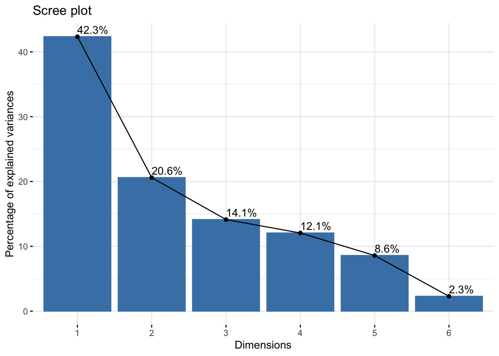
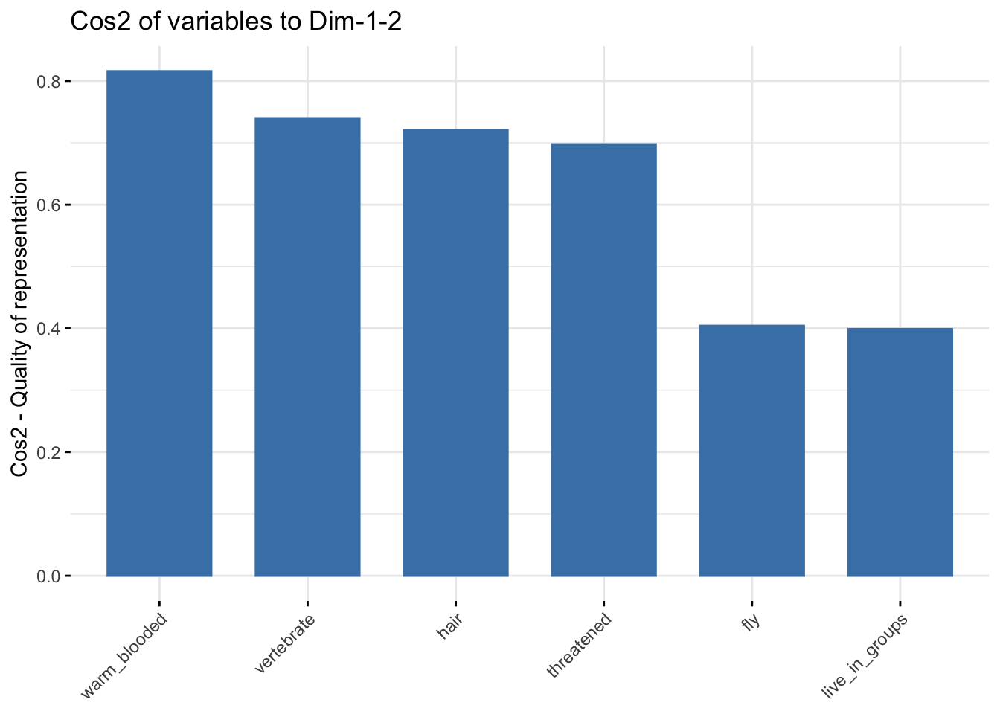
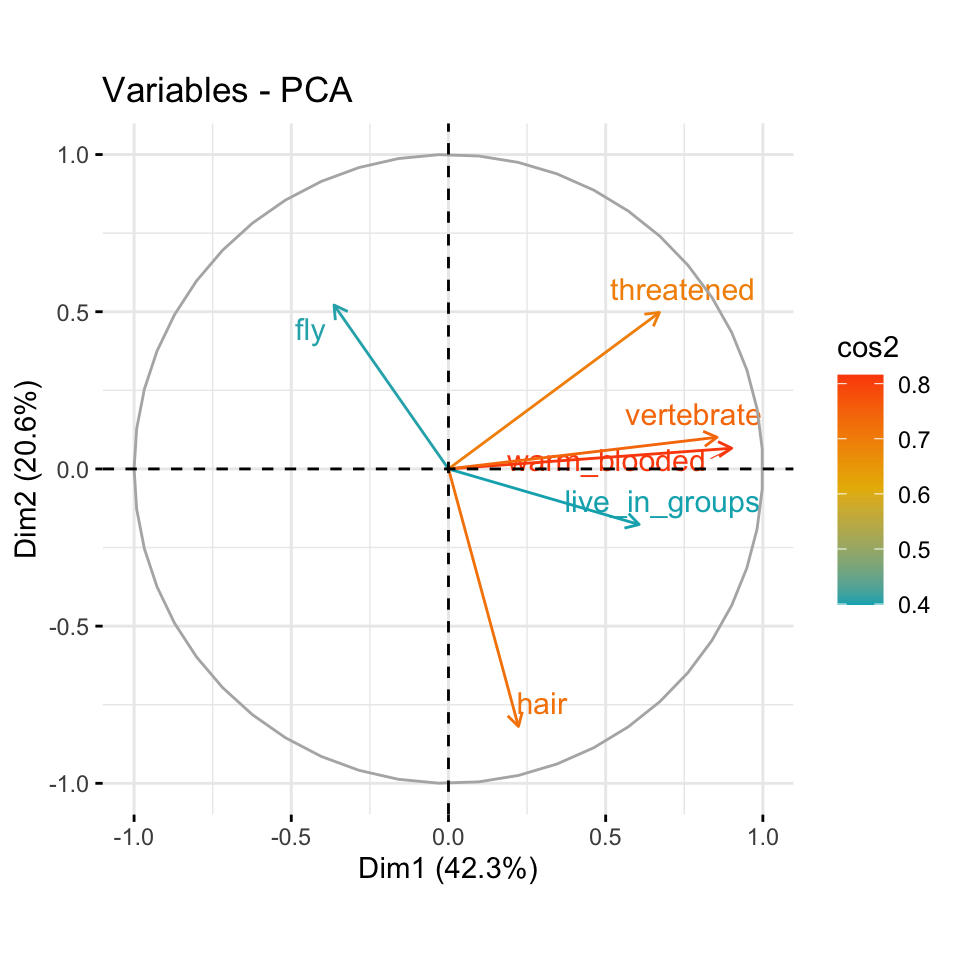
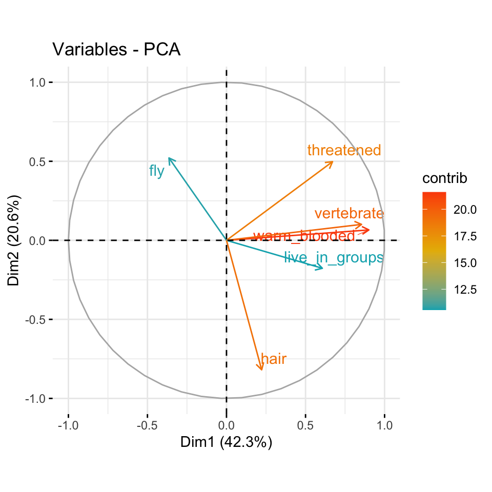
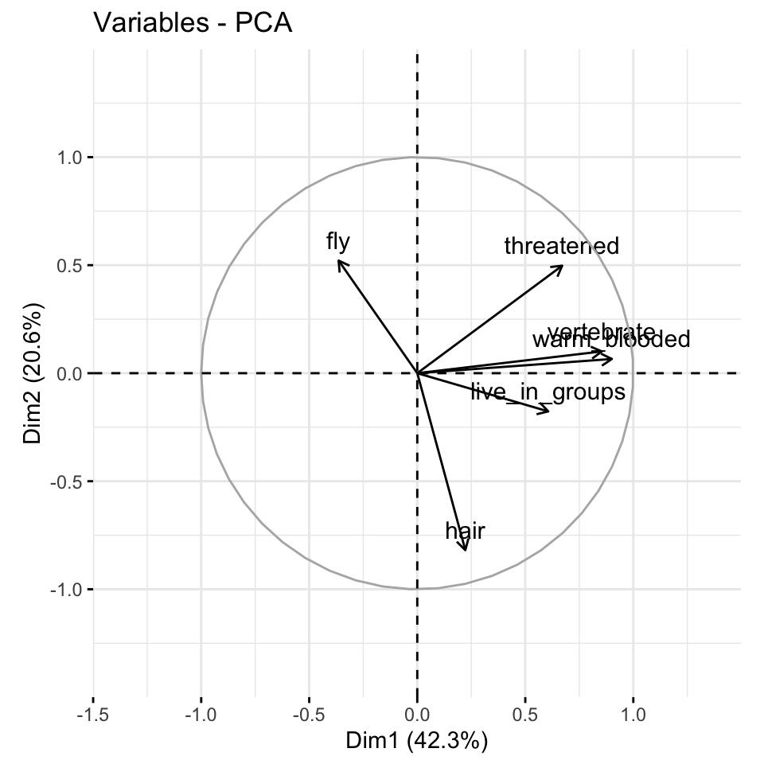
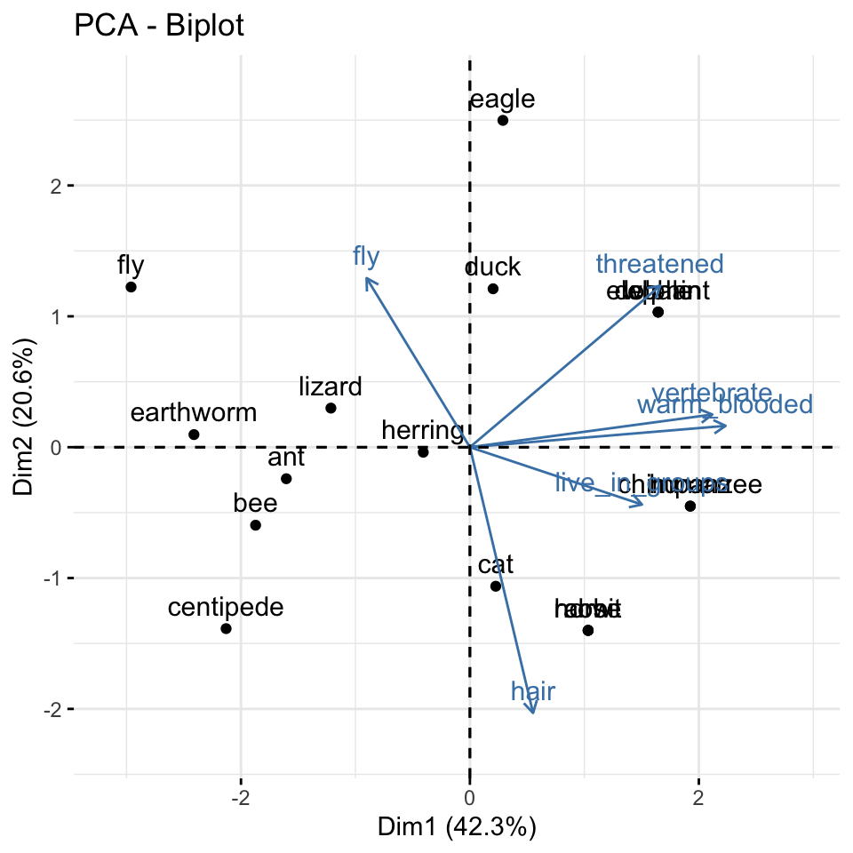

set.seed(20230727)
pacman::p_load(tidyverse, magrittr, readxl,
factoextra, FactoMineR, ggpubr,
janitor, corrplot, conflicted)
conflict_prefer("select", "dplyr")
conflict_prefer("filter", "dplyr")
conflict_prefer("mutate", "dplyr")
conflicts_prefer(magrittr::set_names)
conflicts_prefer(dlookr::transform)54 Hauptkomponentenanalyse
Version vom July 28, 2023 um 19:51:29

“Cluster together like stars!” — Henry Miller
Die Hauptkomponentenanalyse (eng. Principle Component Analysis, abk. PCA) als Abschnitt im Ausreißerkapitel ist der Hauptkomponentenanalyse nicht würdig. Wir könnten hier ein eigenes Kapitel nur über die PCA, wie ich die Hauptkomponentenanalyse ab jetzt immer abkürzen werde, schreiben und das würde nicht reichen. Das hat vor allem damit zu tun, dass die PCA in den Sozialwissenschaften sehr weitreichend genutzt wird. Ebenso ist die Auswertung von Fragebögen allgemein ein Schwerpunkt der PCA. Wir nutzen die PCA hier jetzt um zu sehen, ob wir Ausreißer in unseren Beobachtungen haben. Das ist also eine sehr spezifische Anwendung. Vielleicht wird dieses Kapitel nochmal größer, aber jetzt bleiben wir einmal bei der Anwendung.
Was ist grob die Idee der PCA? Wir wollen unseren Daten, also die ganze Datenmatrix einmal so transformieren, dass wir neue Komponenten aus den Daten extrahieren, die die Daten auf einer anderen Dimension beschreiben. Klingt etwas kryptisch, aber im Prinzip handelt es sich bei der PCA um eine Transformation der Daten. Wir nutzen dabei die Varianzstruktur und die Varianz/Covarianzmatrix. Im Prinzip also die Korrelation zwischen den einzelnen Variablen in dem Datensatz.
Neben der PCA existiert noch das Multidimensional Scaling (abk. MDS). Das MDS ist im Prinzip eine Spezialform der PCA. Im Unterschied zur PCA wird die MDS auf einer Distanzmatrix gerechnet. In einer MDS können wir nicht einfach so unsere Daten reinstecken sondern müssen zuerst die Daten in eine Distanzmatrix umrechnen. Dafür gibt es die Funktion dist() oder as.dist(), wenn wir schon Distanzen vorliegen haben. Daher ist die Anwendung einer MDS nicht besonders komplizierter.
Neben vielemn anderen Tutorien gibt es hier noch ein weiteres zu den PCA - Principal Component Analysis Essentials.
Die Articles - Principal Component Methods in R: Practical Guide geben einen wunderbaren Überblick über alle möglichen Methoden zu der Hauptkomponentenanalyse und deren verwandten Algorithmen.
Wie immer gibt es eine Vielzahl an tollen Tutorien, die die PCA gut erklären. Ich habe hier einmal eine Auswahl zusammengestellt und du kannst dich da ja mal vertiefend mit beschäftigen, wenn du willst. Teile der Tutorien findest du vermutlich hier im Haupttext wieder.
Es gibt eine natürlich große Anzahl an Quellen wie du in R eine PCA oder ein MDS durchführst. In der folgenden Box findest du eine Sammlung an Tutorien und R Code, der dir als Inspiration dienen mag. Ich werde teile von den Tutorien in der Folge verwenden, kann aber natürlich nichts alles nochmal machen.
Wenn wir eine PCA in R rechnen wollen, dann haben wir zuerst die Wahl zwischen den Funktionen prcomp() und princomp(). Laut der R-Hilfe hat die Funktion prcomp() eine etwas bessere numerische Genauigkeit. Daher ist die Funktion prcomp() gegenüber princomp() vorzuziehen. Es gibt aber noch eine neuere Implementierung der Funktionalität in dem R Paket FactoMineR und der Funktion PCA(). Langer Satz kurzes Fazit, wir nutzen die Funktion PCA() im folgenden Abschnitt.
Weitere R Quellen für die Principal Component Analysis
In diesem Kapitel - Das R Paket factoextra Factoextra R Package: Easy Multivariate Data Analyses and Elegant Visualization um sich Faktoranalysen super anzuschauen und durchzuführen.
54.1 Genutzte R Pakete
Wir wollen folgende R Pakete in diesem Kapitel nutzen.
Am Ende des Kapitels findest du nochmal den gesamten R Code in einem Rutsch zum selber durchführen oder aber kopieren.
54.2 Daten
Beginnen wir mit einem normierten Datensatz aus dem R Paket cluster. Der Datensatz animals wurde von mir noch mit ein paar Tieren ergänzt und schaut sich sechs Eigenschaften von 23 Tieren an. Wir wollen im Folgenden nun herausfinden, ob wir anhand der Eigenschaften in den Spalten die Tiere in den Zeilen in Gruppen einordnen können. Einige der Tiere sind ja näher miteinander verwandt als andere Tiere. Die ursprünglichen Daten liefen noch auf einem \(1/2\)-System, das ändern wir dann zu \(0/1\) damit wir dann auch besser mit den Daten arbeiten können. Für die Algorithmen ist es egal, aber ich habe lieber \(1\) gleich ja und \(0\) gleich nein.
animals_tbl <- read_excel("data/cluster_animal.xlsx", sheet = 1) %>%
clean_names() %>%
mutate(across(where(is.numeric), \(x) x - 1))Schauen wir uns einmal den Datensatz in der Tabelle 54.1 an. Wir sehen, dass wir noch einige fehlende Werte in den Daten vorliegen haben. Das ist manchmal ein Problem, deshalb werden wir im Laufe der Analyse die NA Werte mit na.omit() entfernen.
| animal | warm_blooded | fly | vertebrate | threatened | live_in_groups | hair |
|---|---|---|---|---|---|---|
| ant | 0 | 0 | 0 | 0 | 1 | 0 |
| bee | 0 | 1 | 0 | 0 | 1 | 1 |
| cat | 1 | 0 | 1 | 0 | 0 | 1 |
| centipede | 0 | 0 | 0 | 0 | 0 | 1 |
| chimpanzee | 1 | 0 | 1 | 1 | 1 | 1 |
| cow | 1 | 0 | 1 | 0 | 1 | 1 |
| dolphin | 1 | 0 | 1 | 1 | 1 | 0 |
| duck | 1 | 1 | 1 | 0 | 1 | 0 |
| eagle | 1 | 1 | 1 | 1 | 0 | 0 |
| earthworm | 0 | 0 | 0 | 0 | 0 | 0 |
| elephant | 1 | 0 | 1 | 1 | 1 | 0 |
| fly | 0 | 1 | 0 | 0 | 0 | 0 |
| frog | 0 | 0 | 1 | 1 | NA | 0 |
| herring | 0 | 0 | 1 | 0 | 1 | 0 |
| horse | 1 | 0 | 1 | 0 | 1 | 1 |
| human | 1 | 0 | 1 | 1 | 1 | 1 |
| lion | 1 | 0 | 1 | NA | 1 | 1 |
| lizard | 0 | 0 | 1 | 0 | 0 | 0 |
| lobster | 0 | 0 | 0 | 0 | NA | 0 |
| rabbit | 1 | 0 | 1 | 0 | 1 | 1 |
| salmon | 0 | 0 | 1 | 0 | NA | 0 |
| spider | 0 | 0 | 0 | NA | 0 | 1 |
| whale | 1 | 0 | 1 | 1 | 1 | 0 |
Der Tierdatensatz ist schön, da wir es hier nur mit 0/1 Werten zu tun haben. Wir werden später in dem preprocessing der Daten sehen, dass wir alle Spalten in der gleichen Spannweite der Werte wollen. Das klingt immer etwas kryptisch, aber der nächste Datensatz über verschiedene Kreaturen macht es deutlicher.
54.3 Daten standardisieren
54.4 Das data.frame() Problem
Leider ist es so, dass fast alle Pakete im Kontext der Clusteranalyse mit den Zeilennamen bzw. row.names() eines data.frame() arbeiten. Das hat den Grund, dass wir gut das Label in den Zeilennamen parken können, ohne das uns eine Spalte in den Auswertungen stört. Meistens ist das Label ja ein character und soll gar nicht in den Clusteralgorithmus mit rein. Deshalb müssen wir hier einmal unsere tibble() in einen data.frame() umwandeln. Die tibble() haben aus gutem Grund keine Zeilennamen, die Zeilennamen sind ein Ärgernis und Quelle von Fehlern und aus gutem Grund nicht in einem tibble() drin. Hier brauchen wir die Zeilennamen aber.
Wir bauen uns also einmal einen data.frame() für unseren Tierdatensatz und setzen die Tiernamen als Zeilennamen bzw. row.names(). Wir entfernen dann auch noch schnell alle fehlenden Werte, denn wir wollen usn hier nicht noch mit der Imputation von fehlenden Werten beschäftigen.
animals_df <- animals_tbl %>%
na.omit() %>%
as.data.frame() %>%
set_rownames(.$animal) %>%
select(-animal)54.5 Ebene der Eigenwerte
54.6 Ebene der Variablen
54.7 Ebene der Individuen
Eine weitere Möglichkeit die Dimensionen eines Datensatzes zu reduzieren und Abstände zu bestimmen ist die Hauptkomponentenanalyse, die wir schon aus dem Kapitel 38 über die Bestimmung von Ausreißern kennen. Es gibt viele Implementierungen der Hauptkomponentenanalyse in R. Wir nutzen die Funktion PCA() aus dem R Paket FactoMineR.
-
get_eigenvalue(): Extrahiert die Eigenwerte/Varianzen der Hauptkomponenten -
fviz_eig(): Visualisierung der Eigenwerte -
get_pca_ind(),get_pca_var(res.pca): Extrahiert die Ergebnisse für Individuen bzw. Variablen. -
fviz_pca_ind(),fviz_pca_var(res.pca): Visualisierung der Ergebnisse für Individuen bzw. Variablen. -
fviz_pca_biplot(): Erstellt einen Biplot der Individuen und Variablen.
pca_animals <- PCA(animals_df, graph = FALSE)eig_animals <- get_eigenvalue(pca_animals)
eig_animals eigenvalue variance.percent cumulative.variance.percent
Dim.1 2.5407076 42.345127 42.34513
Dim.2 1.2359507 20.599179 62.94431
Dim.3 0.8477162 14.128603 77.07291
Dim.4 0.7234100 12.056834 89.12974
Dim.5 0.5149813 8.583021 97.71276
Dim.6 0.1372342 2.287237 100.00000fviz_eig(pca_animals, addlabels = TRUE)
ind_animals <- get_pca_ind(pca_animals)
ind_animalsPrincipal Component Analysis Results for individuals
===================================================
Name Description
1 "$coord" "Coordinates for the individuals"
2 "$cos2" "Cos2 for the individuals"
3 "$contrib" "contributions of the individuals"var_animals <- get_pca_var(pca_animals)
var_animalsPrincipal Component Analysis Results for variables
===================================================
Name Description
1 "$coord" "Coordinates for the variables"
2 "$cor" "Correlations between variables and dimensions"
3 "$cos2" "Cos2 for the variables"
4 "$contrib" "contributions of the variables" Schauen wir uns einmal an was wir mit den Informationen über die Variablen durch die Funktion get_pca_var() machen können.
-
coord: Koordinaten der Variablen zur Erstellung eines Streudiagramms -
cos2: stellt die Qualität der Darstellung der Variablen auf der Faktorkarte dar. Es wird berechnet als die quadrierten Koordinaten:cos2 = coord * coord -
contrib:enthält die Beiträge (in Prozent) der Variablen zu den Hauptkomponenten. Der Beitrag einer Variablen zu einer bestimmten Hauptkomponente ist (in Prozent): (cos2* 100) / (gesamtercos2der Komponente).
Beachte, dass es möglich ist, Variablen zu zeichnen und sie entweder nach i) ihrer Qualität auf der Faktorkarte cos2 oder ii) ihren Beitragswerten zu den Hauptkomponenten contrib zu färben.
Die Qualität der Darstellung der Variablen auf der Faktorkarte wird als cos2 (quadratischer Kosinus, quadratische Koordinaten) bezeichnet. Sie können auf den cos2 wie folgt zugreifen:
corrplot(var_animals$cos2, is.corr = FALSE)
fviz_cos2(pca_animals, choice = "var", axes = 1:2)Beachten Sie das,
- Ein hoher cos2-Wert deutet auf eine gute Darstellung der Variablen auf der Hauptkomponente hin. In diesem Fall ist die Variable nahe am Umfang des Korrelationskreises positioniert.
- Ein niedriger cos2-Wert zeigt an, dass die Variable nicht perfekt durch die PC’s repräsentiert ist. In diesem Fall befindet sich die Variable in der Nähe der Kreismitte.
- Für eine bestimmte Variable ist die Summe des cos2 aller Hauptkomponenten gleich eins.
Wenn eine Variable nur durch zwei Hauptkomponenten (Dim.1 & Dim.2) perfekt repräsentiert wird, ist die Summe des cos2 auf diesen beiden PC gleich eins. In diesem Fall werden die Variablen auf dem Korrelationskreis positioniert. In Abbildung 54.1 wären die Namen direkt auf dem Korrelationskreis. Für einige der Variablen sind möglicherweise mehr als 2 Komponenten erforderlich, um die Daten perfekt zu repräsentieren. In diesem Fall werden die Variablen innerhalb des Korrelationskreises positioniert, was wir eher in der Abbildung 54.1 sehen.
Die cos2-Werte werden verwendet, um die Qualität der Darstellung abzuschätzen Je näher eine Variable am Korrelationskreis liegt, desto besser ist ihre Darstellung auf der Faktorkarte (und desto wichtiger ist es, diese Komponenten zu interpretieren) Variablen, die sich in der Nähe der Mitte des Diagramms befinden, sind für die ersten Komponenten weniger wichtig.
Es ist möglich, Variablen nach ihren cos2-Werten zu färben, indem man das Argument col.var = “cos2” verwendet. Dies erzeugt einen Farbverlauf. In diesem Fall kann das Argument gradient.cols verwendet werden, um eine benutzerdefinierte Farbe anzugeben. Zum Beispiel bedeutet gradient.cols = c(“weiß”, “blau”, “rot”), dass:
Variablen mit niedrigen cos2-Werten werden in “weiß” eingefärbt Variablen mit mittleren cos2-Werten werden in “blau” eingefärbt Variablen mit hohen cos2-Werten werden in “rot” eingefärbt
fviz_pca_var(pca_animals, col.var = "cos2",
gradient.cols = c("#00AFBB", "#E7B800", "#FC4E07"),
repel = TRUE # Avoid text overlapping
)
fviz_pca_var(pca_animals, col.var = "contrib",
gradient.cols = c("#00AFBB", "#E7B800", "#FC4E07"),
repel = TRUE # Avoid text overlapping
)

fviz_pca_var(pca_animals, col.var = "black") +
scale_x_continuous(expand = expansion(add = c(0.5, 0.5))) +
scale_y_continuous(expand = expansion(add = c(0.5, 0.5)))
fviz_pca_ind(pca_animals,
col.ind = "cos2",
gradient.cols = c("#00AFBB", "#E7B800", "#FC4E07"),
repel = TRUE) +
scale_x_continuous(expand = expansion(add = c(0.5, 1))) +
scale_y_continuous(expand = expansion(add = c(0.5, 0.5)))
fviz_pca_biplot(pca_animals) +
scale_x_continuous(expand = expansion(add = c(0.5, 1))) +
scale_y_continuous(expand = expansion(add = c(0.5, 0.5))) 

54.8 Hauptkomponentenanalyse
Wir müssen uns jetzt leider etwas von dem tibble verabschieden. Für die PCA brauchen wir einen Datensatz, in dem nur Zahlen oder Faktoren stehen. Daher schieben wir die Namen der Beobachtungen oder die ID in die Zeilennamen. Eigentlich keine gute Idee für die Arbeit mit Daten, aber für die PCA passt es. Wir haben dann also den data.frame() als longnose_pca_df vorliegen. Mit diesem Datensatzobjekt können wir dann in die PCA starten.
longnose_pca_df <- longnose_tbl %>%
select(-stream) %>%
as.data.frame() %>%
set_rownames(longnose_tbl$stream)Wenn wir die Daten von jeglichen character Spalten gereinigt haben, dann können wir die Funktion PCA() nutzen. Wir wollen uns die Visualisierung gleich selber nochmal nachbauen, deshalb hier die Option mit graph = FALSE. Im folgenden schauen wir uns nur eine Auswahl an möglichen Abbildungen an. Davon natürlich die wichtigsten Abbildungen, aber das Factoextra R Package: Easy Multivariate Data Analyses and Elegant Visualization kann natürlich noch viel mehr.
pca_res <- PCA(longnose_pca_df, graph = FALSE)Nachdem wir die PCA durchgeführt haben, schauen wir uns einmal an, ob es überhaupt irgendwas gebracht hat, dass wir die PCA durchgeführt haben. Wir haben ja unsere Daten transformiert und erhalten pro Variable eine neue Dimension wieder. In einem Scree Plot wie in ?fig-pca-1 wird die erklärte Varianz pro Hauptkomponente gezeigt.
fviz_screeplot(pca_res, addlabels = TRUE, ylim = c(0, 50))Wir erkennen, dass unsere Hauptkomponenten teilweise viel Varianz erklären, aber wir keine Hauptkomponente gefunden haben, die sehr viel Varianz erklärt. Es gibt also in unseren erhobenen Daten keine Variable, die “alles” erklärt. Mit “alles” ist dann natürlich die Varianz gemeint. In ?fig-pca-2-1 sehen wir das Diagramm der Variablen, also der Spalten in der Datenmatrix. Positiv korrelierte Variablen zeigen auf dieselbe Seite des Diagramms. Negativ korrelierte Variablen zeigen auf die gegenüberliegenden Seiten des Diagramms. In ?fig-pca-2-2 ist das Diagramm der Beobachtungen, also den Zeilen in der Datenmatrix, dargestellt. Beobachtungen mit einem ähnlichen Muster über die Zeilen werden in Gruppen zusammengefasst. In der ?fig-pca-2-3 sehen wir nochmal die beiden Abbilungen zusammen und übereinander.
fviz_pca_var(pca_res, col.var = "black")
fviz_pca_ind(pca_res,
col.ind = "cos2",
gradient.cols = c("#00AFBB", "#E7B800", "#FC4E07"),
repel = TRUE)
fviz_pca_biplot(pca_res)Gut, und was sollte das ganze jetzt? Wenn wir uns die Abbildungen ansehen, dann erkennen wir zuerst, dass es zwar Variablen gibt, die sich sehr ähnlich sind. Die Variable area und maxdepth sind stark miteinander korreliert. Die Pfeile zeigen beide in die gleiche Richtung. Ebenso scheint es einen negativen Zusammenhang zwischen so4 und do2 zu geben. Die Richtung ist egal, wir können die Dimensionen nicht direkt interpretieren, aber die Zusammenhänge zwischen den Variablen. Abschließend sehen wir, dass wir eine zu erwartende Aufteilung der Variablen haben. Immerhin messen wir Werte eines Flusses, da sollten die Variablen was miteinander zu tun haben. Auch ist die Kausalität gegeben. Wir erwarten bei einer hohen Temperatur weniger Sauerstoff und umgekehrt.
Bei der Aufteilung der Beobachtungen sehen wir auch keine Auffälligkeiten. Wir sehen eine große Wolke mit keinen separaten Gruppen. Das heißt, obwohl wir weiter oben Ausreißer gefunden haben, würde ich hier alle Beoachtungen in den Daten lassen, wenn ich die PCA sehe. Es ist dann immer eine Abschätzung. Wir sehen aber keine sonderlich auffälligen Beobachtungen. Wir könnten noch überlegen, ob wir das Outcome longnose nicht doch lieber aus der PCA nehmen und festhalten, dass es im Outcome keine Ausreißer gibt. Kontroverse Entscheidung, dir wir uns überlegen müssten. Beobachtungen aus einem Datensatz zu entfernen, den man nicht selber erschaffen hat, ist immer eine sehr schwere Sache.
54.9 Multi Dimensional Scaling (MDS)
Eine besondere Form der Hauptkomponentenanalyse ist das Multidimensional Scaling (abk. MDS). Im Prinzip sind die Mechanismen sehr ähnlich. Der Hauptunterschied ist aber, das wir für die MDS eine Distanzmatrix benötigen. Wir können dafür die Funktion dist() oder as.dist() nehmen, wenn wir schon Distanzen vorliegen haben. Nehmen wir als plakatives Beispiel einmal die Distanzen von europäischen Städten zueinander. Wir haben die Daten in der Exceldatei distance.xlsx vorliegen. Wir lesen die Daten einmal ein und schauen uns die ersten fünf Spalten und die ersten fünf Zeilen des Datensatzes einmal an.
distance_tbl <- read_excel("data/distance.xlsx")
distance_tbl[1:5, 1:5]# A tibble: 5 × 5
city Amsterdam Antwerp Athens Barcelona
<chr> <dbl> <dbl> <dbl> <dbl>
1 Amsterdam 0 160 3082 1639
2 Antwerp 160 0 2766 1465
3 Athens 3082 2766 0 3312
4 Barcelona 1639 1465 3312 0
5 Berlin 649 723 2552 1899Wenn wir jetzt auf diesem Datensatz jetzt ein MDS rechnen wollen, dann müssen wir zum einen alle Spalten mit einem character entfernen. Wir haben dann nur noch einen Datensatz bzw. Datenmatrix mit den Distanzen vorliegen. Dann kann wir das tibble in einen dist-Objekt mit der Funktion as.dist() umwandeln. Die eigentliche Berechnung für das Multidimensional Scaling findet in der Funktion cmdscale() statt. Mit der Option k = 2 legen wir fest, dass wir nur zwei Hauptkomponenten bzw. Dimensionen bestimmen wollen. Wir machen also aus unserem 37x37 großen Datenmatrix durch Multidimensional Scaling eine Reduktion auf zwei Dimensionen bzw. Spalten.
In Abbildung 54.4 sehen wir das Ergebnis der Dimensionsreduktion auf zwei Dimensionen. Wir erhalten die Zusammenhänge bzw. Distanzen aus der Datenmatrix in einem Scatterplot. Ein Scatterplot ist ja nichts anders als die Darstellung von zwei Dimensionen. Wie wir sehen können nimmt die Anordnung der Orte in etwa die Positionen von den Orten auf der Landkarte in Europa ein. Natürlich stimmen die Relationen nicht perfekt, aber das Abbild ist schon recht nahe dran. Wir können also auf diese Art und Weise auch Ausreißer bestimmen.
ggscatter(mds, x = "Dim.1", y = "Dim.2",
label = distance_tbl$city,
size = 1,
repel = TRUE)
Wenn wir keine Distanzmatrix wie im obigen Beispiel zu den Entfernungen der europäischen Städte vorliegen haben, dann können wir uns die Distanzen auch mit der Funktion dist() berechnen lassen. Wir nutzen jetzt mal als Echtdaten die Daten der Gummibärchen. Mal sehen, ob wir hier irgendwelche Gruppen erkennen. Die Hilfeseite der Funktion ?dist zeigt welche mathematischen Distanzmaße wir auf die Daten anwenden können. In unseren Fall berechnen wir die euklidische Distanz zwischen den Beobachtungen. Dann rufen wir über die Funkion cmdsscale das Multidimensional Scaling auf.
Das Ergebnis des Multidimensional Scaling hat keine Bedeutung für uns. Wir können die Zahlen nicht interpretieren. Was wir können ist das Ergebnis in einem Scatterplot wie in Abbildung 54.5 zu visualisieren.
ggscatter(mds, x = "Dim.1", y = "Dim.2",
label = rownames(animals_df),
size = 1,
repel = TRUE)
Na endlich, wir sehen mal eine Gruppe von Beobachtungen oder Ausreißern, die nicht in der Wolke aller Beobachtungen liegen. Beobachtungen mit einem Wert kleiner \(-20\) in der 2. Dimension könnten wir dann als Ausreißer entfernen. Der Rest bildet dann eine recht homogene Gruppe. Wir können uns aber auch das \(k\)-NN Verfahren aus dem Kapitel 61 nutzen um Cluster in den Daten zu finden. Das heißt wir nutzen das maschinelle Lernverfahren \(k-NN\) um uns \(k\) Cluster bestimmen zu lassen. Dafür nutzen wir die Funktion kmeans() und ziehen uns über die Funktion pluck() die Cluster raus. Daher erhalten wir einen Vektor mit Zahlen, die beschreiben in welchem Cluster die jeweilige \(i\)-te Beobachtung ist.
Wir wollen jetzt unser MDS Ergebnis von den Gummibärchen um eine Spalte für die Clusterergebnisse von \(k\)-NN ergänzen.
mds <- mds %>%
mutate(groups = clust)Nun sehen in Abbildung 54.6 die gleiche Abbildung wie oben nur ergänzt um die farbliche Hinterlegung der \(k=5\) Clustern aus dem \(k\)-NN Algorithmus. Wir können jetzt die Ausreißer numerisch feststellen und dann aus den Daten entfernen, wenn wir dies wollen würden. Entweder machen wir das über die Clusterzuordnung vom gelben Cluster 2 über die Funktion filter() oder aber wir suchen uns die Beobachtungen und damit Zeilen raus, die wir nicht mehr in den Daten wollen. Die Nummern stehen ja dabei.
ggscatter(mds, x = "Dim.1", y = "Dim.2",
label = rownames(animals_df),
color = "groups",
palette = "jco",
size = 1,
ellipse = TRUE,
ellipse.type = "convex",
repel = TRUE)